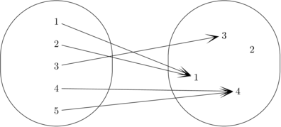

|
Building Blocks
|
In this chapter, we'll see what it means for a function to be one-to-one and bijective. This general topic includes counting permutations and comparing sizes of finite sets (e.g. the pigeonhole principle). We'll also see the method of adding stipulations to a proof ``without loss of generality'' as well as the technique of proving an equality via upper and lower bounds.
Suppose that $f:A \rightarrow B$ is a function from $A$ to $B$.
If we pick a value $y \in B$, then $x \in A$ is a pre-image of $y$
if $f(x) = y$.
Notice that I said a pre-image of $y$, not
the pre-image of $y$, because $y$ might have more than
one preimage.
For example, in the following function,
1 and 2 are pre-images of 1, 4 and 5 are pre-images of 4, 3 is
a pre-image of 3, and 2 has no preimages.

A function is one-to-one if it never assigns two input values to the same output value. Or, said another way, no output value has more than one pre-image. So the above function isn't one-to-one, because (for example) 4 has more than one pre-image. If we define $g: \mathbb{Z} \rightarrow \mathbb{Z}$ such that $g(x) = 2x$. Then $g$ is one-to-one.
As with onto, whether a function is one-to-one frequently depends on its type signature. For example, the absolute value function $|x|$ is not one-to-one as a function from the reals to the reals. However, it is one-to-one as a function from the natural numbers to the natural numbers.
One formal definition of one-to-one is: $$\forall x,y \in A, x \not = y \rightarrow f(x) \not = f(y)$$
For most proofs, it's more convenient to use the contrapositive: $$\forall x,y \in A, f(x)= f(y) \rightarrow x = y$$
When reading this definition, notice that when you set up two variables $x$ and $y$, they don't have to have different (math jargon: ``distinct'') values. In normal English, if you give different names to two objects, the listener is expected to understand that they are different. By contrast, mathematicians always mean you to understand that they might be different but there's also the possibility that they might be the same object.
If a function $f$ is both one-to-one and onto, then each output value has exactly one pre-image. So we can invert $f$, to get an inverse function $f^{-1}$. A function that is both one-to-one and onto is called bijective or a bijection. If $f$ maps from $A$ to $B$, then $f^{-1}$ maps from $B$ to $A$.
Suppose that $A$ and $B$ are finite sets. Constructing an onto function from $A$ to $B$ is only possible when $A$ has at least as many elements as $B$. Constructing a one-to-one function from $A$ to $B$ requires that $B$ have at least as many values as $A$. So if there is a bijection between $A$ and $B$, then the two sets must contain the same number of elements. As we'll see later, bijections are also used to define what it means for two infinite sets to be the ``same size.''
Suppose that $A$ contains more elements than $B$. Then it's impossible to construct a function $A$ to $B$ that is one-to-one, because two elements of $A$ must be mapped to the same element of $B$. If we rephrase this in terms of putting labels on objects, we get the following Pigeonhole Principle:
Pigeonhole principle: Suppose you have $n$ objects and assign $k$ labels to these objects. If $n > k$, then two objects must get the same label.
For example, if you have 8 playing cards and the cards come in five colors, then at least two of the cards share the same color. These elementary examples look more interesting when they involve larger numbers. For example, it would work poorly to assign three letter, case insensitive, usernames for the undergraduates at the University of Illinois. The Urbana-Champaign campus alone has over 30,000 undergraduates. But there are only $26^3 = 17,576$ 3-letter usernames. So the pigeonhole principle implies that there would be a pair of undergraduates assigned the same username.
The pigeonhole principle (like many superheros) has a dual identity. When you're told to apply it to some specific objects and labels, it's obvious how to do so. However, it is often pulled out of nowhere as a clever trick in proofs, where you would have never suspected that it might be useful. Such proofs are easy to read, but sometimes hard to come up with.
For example, here's a fact that we can prove with a less obvious application of the pigeonhole principle.
Claim 1: Among the first 100 powers of 17, there are two (distinct) powers which differ by a multiple of 57.
The trick here is to notice that two numbers differ by a multiple of 57 exactly when they have the same remainder mod 57. But we have 100 distinct powers of 17 and only 57 different possible values for the remaider mod 57. So our proof might look like:
Proof: The first 100 powers of 17 are $17^1, 17^1, \ldots, 17^{100}$. Consider their remainders mod 57: $r_1, r_2, \ldots, r_{100}$. Since there are only 57 possible remainders mod 57, two of the numbers $r_1, r_2, \ldots, r_{100}$ must be equal, by the pigeonhole principle. Let's suppose that $r_j$ and $r_k$ are equal. Then $17^j$ and $17_k$ have the same remainder mod 57, and so $17^j$ and $17_k$ differ by a multiple of 57.
The actual use of the pigeonhole principle almost seems like an afterthought, after we've come up with the right trick to structuring our analysis of the problem. This is typical of harder pigeonhole principle proofs.
Now, suppose that $|A| = n = |B|$. We can construct a number of one-to-one functions from $A$ to $B$. How many? Suppose that $A=\{x_1,x_2,\ldots,x_n\}$. We have $n$ ways to choose the output value for $x_1$. But that choice uses up one output value, so we have only $n-1$ choices for the output value of $x_2$. Continuing this pattern, we have $n(n-1)(n-2)\ldots 2\cdot 1$ ($n!$ for short) ways to construct our function.
Similarly, suppose we have a group of $n$ dragon figurines that we'd like to arrange on the mantlepiece. We need to construct a map from positions on the mantlepiece to dragons. There are $n!$ ways to do this. An arrangement of $n$ objects in order is called a permutation of the $n$ objects.
More frequently, we need to select an ordered list of $k$ objects from a larger set of $n$ objects. For example, we have 30 dragon figurines but space for only 10 on our mantlepiece. Then we have $30$ choices for the first figurine, $29$ for the second, and so forth down to 21 choices for the last one. Thus we have $30\cdot29\cdot\ldots21$ ways to decorate the mantlepiece.
In general, an ordered choice of $k$ objects from a set of $n$ objects is known as a $k$-permutation of the $n$ objects. There are $n(n-1)\ldots(n-k+1) = \frac{n!}{(n-k)!}$ different $k$-permutations of $n$ objects. This number is called $P(n,k)$. $P(n,k)$ is also the number of one-to-one functions from a set of $k$ objects to a set of $n$ objects.
Many real-world counting problems can be solved with the permutations formulas, but some problems require a bit of adaptation. For example, suppose that 7 adults and 3 kids need to get in line at the airport. Also suppose that we can't put two children next to each other, because they will fight.
The trick for this problem is to place the 7 adults in line, with gaps between them. Each gap might be left empty or filled with one kid. There are 8 gaps, into which we have to put the 3 kids. So, we have $7!$ ways to assign adults to positions. Then we have 8 gaps in which we can put kid $A$, 7 for kid $B$, and 6 for kid $C$. That is $7! \cdot 8\cdot 7 \cdot 6$ ways to line them all up.
Now, let's suppose that we have a set of 7 scrabble tiles and we would like to figure out how many different letter strings we can make out of them. We could almost use the permutations formula, except that some of the tiles might contain the same letter. For example, suppose that the tiles are: $C, O, L, L, E, G, E$.
First, let's smear some dirt on the duplicate tiles, so we can tell the two copies apart: $C, O, L_1, L_2, E_1, G, E_2$. Then we would calculate $7!$ permutations of this list. However, in terms of our original problem, this is double-counting some possibilities, because we don't care about the difference between duplicates like $L_1$ and $L_2$. So we need to divide out by the number of ways we can permute the duplicates. In this case, we have $2!$ ways to permute the L's and $2!$ ways to permute the E's. So the true number of orderings of $L$ is $\frac{7!}{2!2!}$.
Similarly, the number of reorderings of $J = (a, p, p, l, e, t, r, e, e, s)$ is $\frac{10!}{2!3!}$.
In general, suppose we have $n$ objects, where $n_1$ are of type 1, $n_2$ are of type 2, and so forth through $n_k$ are of type $k$. Then the number of ways to order our list of objects is $\frac{n!}{n_1!n_2!\ldots n_k!}$.
Now, let's move on to examples of how to prove that a specific function is one-to-one.
Claim 2: Let $f:\mathbb{Z} \rightarrow \mathbb{Z}$ be defined by $f(x) = 3x + 7$. $f$ is one-to-one.
Let's prove this using our definition of one-to-one.
Proof: We need to show that for every integers $x$ and $y$, $f(x) = f(y) \rightarrow x = y$.So, let $x$ and $y$ be integers and suppose that $f(x) = f(y)$. We need to show that $x = y$.
We know that $f(x) = f(y)$. So, substituting in our formula for $f$, $3x + 7 = 3y + 7$. So $3x= 3y$ and therefore $x = y$, by high school algebra. This is what we needed to show.
When we pick $x$ and $y$ at the start of the proof, notice that we haven't specified whether they are the same number or not. Mathematical convention leaves this vague, unlike normal English where the same statement would strongly suggest that they were different.
Like onto, one-to-one works well with function composition. Specifically:
Claim 3: For any sets $A$, $B$, and $C$ and for any functions $f:A \rightarrow B$ and $g:B \rightarrow C$, if $f$ and $g$ are one-to-one, then $g \circ f$ is also one-to-one.
We can prove this with a direct proof, by being systematic about using our definitions and standard proof outlines. First, let's pick some representative objects of the right types and assume everything in our hypothesis.
Proof: Let $A$, $B$, and $C$ be sets. Let $f:A \rightarrow B$ and $g:B \rightarrow C$ be functions. Suppose that $f$ and $g$ are one-to-one.We need to show that $g \circ f$ is one-to-one.
To show that $g \circ f$ is one-to-one, we need to pick two elements $x$ and $y$ in its domain, assume that their output values are equal, and then show that $x$ and $y$ must themselves be equal. Let's splice this into our draft proof. Remember that the domain of $g \circ f$ is $A$ and its co-domain is $C$.
Proof: Let $A$, $B$, and $C$ be sets. Let $f:A \rightarrow B$ and $g:B \rightarrow C$ be functions. Suppose that $f$ and $g$ are one-to-one.We need to show that $g \circ f$ is one-to-one. So, choose $x$ and $y$ in $A$ and suppose that $(g \circ f)(x) =(g \circ f)(y)$
We need to show that $x = y$.
Now, we need to apply the definition of function composition and the fact that $f$ and $g$ are each one-to-one:
Proof: Let $A$, $B$, and $C$ be sets. Let $f:A \rightarrow B$ and $g:B \rightarrow C$ be functions. Suppose that $f$ and $g$ are one-to-one.We need to show that $g \circ f$ is one-to-one. So, choose $x$ and $y$ in $A$ and suppose that $(g \circ f)(x) =(g \circ f)(y)$
Using the definition of function composition, we can rewrite this as $g(f(x)) =g(f(y))$. Combining this with the fact that $g$ is one-to-one, we find that $f(x) = f(y)$. But, since $f$ is one-to-one, this implies that $x = y$, which is what we needed to show.
Now, let's do a slightly trickier proof. First, a definition. Suppose that $A$ and $B$ are sets of real numbers (e.g. the reals, the rationals, the integers). A function $f: A \rightarrow B$ is increasing if, for every $x$ and $y$ in $A$, $x \le y$ implies that $f(x) \le f(y)$. $f$ is called strictly increasing if, for every $x$ and $y$ in $A$, $x < y$ implies that $f(x) < f(y)$. An increasing function can have plateaus where the output value stays constant, whereas a strictly increasing function must always increase.
Notice that, in mathematical writing, ``strictly'' is often used to exclude the possibility of equality.
Claim 4: For any sets of real numbers $A$ and $B$, if $f$ is any strictly increasing function from $A$ to $B$, then $f$ is one-to-one.
A similar fact applies to strictly decreasing functions.
To prove this, we will restate one-to-one using the alternative, contrapositive version of its definition. $$\forall x,y \in A, x \not = y \rightarrow f(x) \not = f(y)$$
Normally, this wouldn't be a helpful move. The hypothesis involves a negative fact, whereas the other version of the definition has a positive hypothesis, normally a better place to start. But this is an atypical example and, in this case, the negative information turns out to be a good starting point.
Proof: Let $A$ and $B$ be sets of numbers and let $f:A \rightarrow B$ be a strictly increasing function. Let $x$ and $y$ be distinct elements of $A$. We need to show that $f(x) \not = f(y)$.Since $x \not = y$, there's two possibilities.
Case 1: $x < y$. Since $f$ is strictly increasing, this implies that $f(x) < f(y)$. So $f(x) \not = f(y)$
Case 2: $y < x$. Since $f$ is strictly increasing, this implies that $f(y) < f(x)$. So $f(x) \not = f(y)$.
In either case, we have that $f(x) \not = f(y)$, which is what we needed to show.
The phrase ``distinct elements of $A$'' is math jargon for $x \not = y$.
When we got partway into the proof, we had the fact $x \not = y$ which isn't easy to work with. But the trichotomy axiom for real number states that for any $x$ and $y$, we have exactly three possibilities: $x = y$, $x < y$, or $y < x$. The constraint that $x \not = y$ eliminates one of these possibilities.
In this example, the proofs for the two cases are very, very similar. So we can fold the two cases together. Here's one approach, which I don't recommend doing in the early part of this course but which will serve you well later on:
Proof: Let $A$ and $B$ be sets of numbers and let $f:A \rightarrow B$ be a strictly increasing function. Let $x$ and $y$ be distinct elements of $A$. We need to show that $f(x) \not = f(y)$.Since $x \not = y$, there's two possibilities.
Case 1: $x < y$. Since $f$ is strictly increasing, this implies that $f(x) < f(y)$. So $f(x) \not = f(y)$
Case 2: $y < x$. Similar to case 1.
In either case, we have that $f(x) \not = f(y)$, which is what we needed to show.
This method only works if you, and your reader, both agree that it's obvious that the two cases are very similar and the proof will really be similar. Dangerous assumption right now. And we've only saved a small amount of writing, which isn't worth the risk of losing points if the grader doesn't think it was obvious.
But this simplification can be very useful in more complicated situations where you have may have lots of cases, the proof for each case is long, and the proofs for different cases really are very similar.
Here's another way to simplify our proof:
Proof: Let $A$ and $B$ be sets of numbers and let $f:A \rightarrow B$ be a strictly increasing function. Let $x$ and $y$ be distinct elements of $A$. We need to show that $f(x) \not = f(y)$.We know that $x \not = y$, so either $x < y$ or $y < x$. Without loss of generality, assume that $x < y$.
Since $f$ is strictly increasing, $x < y$ implies that $f(x) < f(y)$. So $f(x) \not = f(y)$, which is what we needed to show.
The phrase ``without loss of generality'' means that we are adding an additional assumption to our proof but we claim it isn't really adding any more information. In this case, $s$ and $t$ are both arbitrary indices introduced at the same time. It doesn't really matter which of them is called $s$ and which is called $t$. So if we happen to have chosen our names in an inconvenient order, we could simply swap the two names.
Simplifying a problem ``without loss of generality'' is a powerful but potentially dangerous proof technique. You'll probably probably want to see a few times before you use it yourself. It's actually used fairly often to simplify proofs, so it has an abbreviation: WOLOG or WLOG.
The term ``injective'' is a synonym for one-to-one and one-to-one correspondence is a synonym for bijective. The phrase ``by symmetry'' is often used in place of ``without loss of generality.''
``Monotonically increasing'' is a synonym for ``increasing.'' The terms ``non-decreasing'' and ``weakly increasing'' are also synonyms for ``increasing,'' which are often used when the author worries that the reader might forget that ``increasing'' allows plateaus.